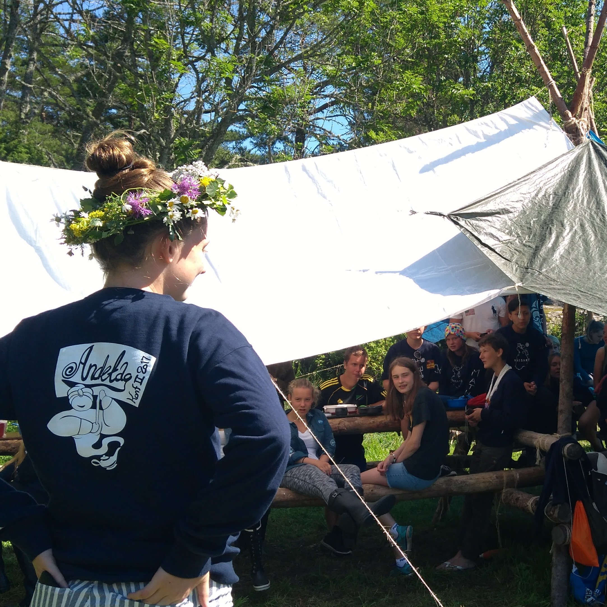

En del arbete har jag gjort, mycket volontärarbete men också en del avlönat jobb.
Logotypdesign åt Anchor Management
Under vintern 2016-2017 fick jag en uppgift av Anchor Management consulting, de ville ha ett antal pictogram som kunde användas för deras marknadsstrategier. Dessa pictogram skulle alltså visas för kunder under workshops men också på Anchors hemsida. Det går att se alla bilder jag gjorde på deras hemsida.

Konfirmationsledare
Någon gång vid slutet av sommaren 2016 fick jag och fem av mina kamrater förtroendet att hålla i ett av de två konfirmationslägrena på Vässarö under sommaren 2017. Det innebar ungefär ett halvårs planering innan lägret skulle hållas, en månad och 48 ungdomar i 14-årsåldern, dygnet runt. Kämpigt men vansinnigt roligt och givande. Logotypen som prydde allas ryggar ritade jag men det är en bisak i sammanhanget. Där fick vi ett unikt förtroende där jag lärde mig om relationer och hur man leder och bemöter människor på ett vänligt och respektfullt sätt.
